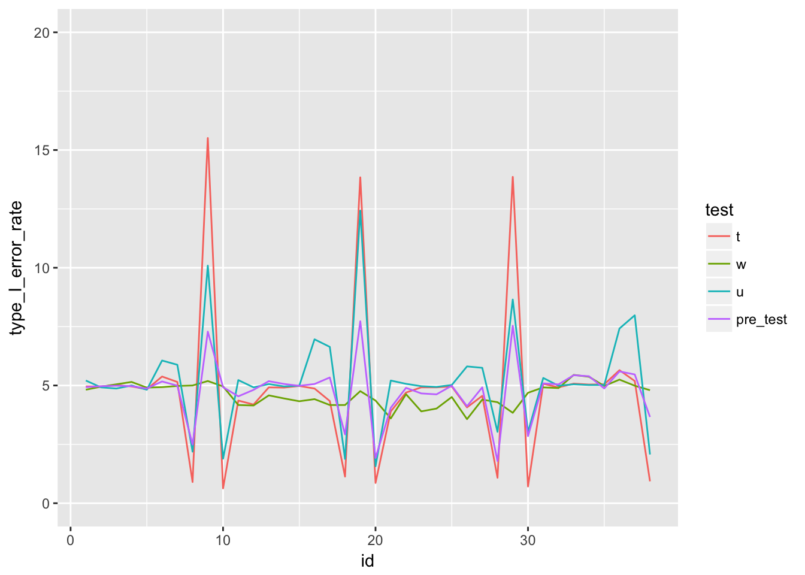
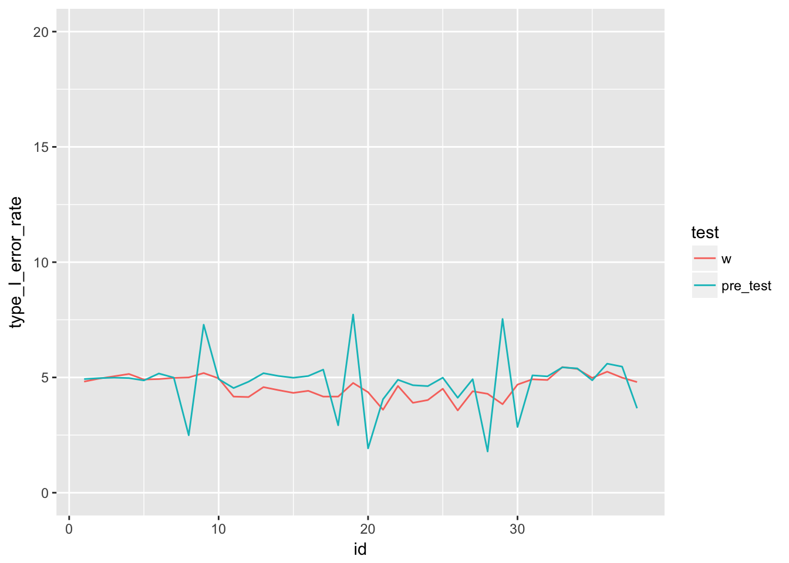

Last updated: 2018-02-28
Code version: 66681b1
knitr::opts_chunk$set(echo = FALSE, warning = FALSE)
library(epistats)
library(magrittr)
library(dplyr)
library(here)This analysis is based on the paper by Rasch et al. on the value of pre-testing assumptions of two-sample location tests (T-test, Wilcoxon-Mann-Whitney U test, Welch’s-T-test) (Rasch, Kubinger, and Moder, 2011).
In the paper they test two ways of working:
In a graph:
In their results, they reported the actual type I error rate of the differents tests along 100.000 simulations over a set of continuous probability density functions, parameterized with 4 moments.
Howerever, we can argue that what they actually should test is the type I error rate of the total strategy of pre-testing. This requires a compositional type I error rate, weighted by the times a certain test was used.
We grabbed the data from their paper pdf with an online pdf to excel tool. After some manual deletion of rows and columns, the data was ready for import into R
# A tibble: 6 x 12
distribution_type var_ratio n1 n2 pre_t pre_w pre_w_freq pre_u
<dbl> <dbl> <dbl> <dbl> <dbl> <dbl> <chr> <dbl>
1 1.00 1.00 10.0 10.0 4.95 4.55 4.84 0
2 NA NA 30.0 30.0 4.97 4.82 (4.98) 11.1
3 NA NA 10.0 30.0 5.00 4.87 (4.31) 0
4 NA NA 30.0 10.0 4.97 5.09 (4.32) 0
5 NA NA 30.0 100 4.86 5.00 (4.80) 9.09
6 NA 2.00 10.0 10.0 6.08 3.33 (32.99) 0
# ... with 4 more variables: pre_u_freq <chr>, t <dbl>, w <dbl>, u <dbl>Fill consecutive rows of distribution type and variance ratio with last non-missing values
# A tibble: 6 x 12
distribution_type var_ratio n1 n2 pre_t pre_w pre_w_freq pre_u
<dbl> <dbl> <dbl> <dbl> <dbl> <dbl> <chr> <dbl>
1 1.00 1.00 10.0 10.0 4.95 4.55 4.84 0
2 1.00 1.00 30.0 30.0 4.97 4.82 (4.98) 11.1
3 1.00 1.00 10.0 30.0 5.00 4.87 (4.31) 0
4 1.00 1.00 30.0 10.0 4.97 5.09 (4.32) 0
5 1.00 1.00 30.0 100 4.86 5.00 (4.80) 9.09
6 1.00 2.00 10.0 10.0 6.08 3.33 (32.99) 0
# ... with 4 more variables: pre_u_freq <chr>, t <dbl>, w <dbl>, u <dbl>Lose the parentheses in some columns
# A tibble: 6 x 12
distribution_type var_ratio n1 n2 pre_t pre_w pre_w_freq pre_u
<dbl> <dbl> <dbl> <dbl> <dbl> <dbl> <dbl> <dbl>
1 1.00 1.00 10.0 10.0 4.95 4.55 4.84 0
2 1.00 1.00 30.0 30.0 4.97 4.82 4.98 11.1
3 1.00 1.00 10.0 30.0 5.00 4.87 4.31 0
4 1.00 1.00 30.0 10.0 4.97 5.09 4.32 0
5 1.00 1.00 30.0 100 4.86 5.00 4.80 9.09
6 1.00 2.00 10.0 10.0 6.08 3.33 33.0 0
# ... with 4 more variables: pre_u_freq <dbl>, t <dbl>, w <dbl>, u <dbl>Now calculate frequency of using T test as 100% minus W and U, and check they add up to 100%
.
100
38 Calculate weighted type I error rate for strategy 1 with pre-testing
Look at improved results table:
| distribution_type | var_ratio | n1 | n2 | pre_test | t | w | u |
|---|---|---|---|---|---|---|---|
| 1 | 1 | 10 | 10 | 4.929650 | 4.96 | 4.82 | 5.21 |
| 1 | 1 | 30 | 30 | 4.968056 | 4.96 | 4.95 | 4.92 |
| 1 | 1 | 10 | 30 | 4.991397 | 5.01 | 5.05 | 4.87 |
| 1 | 1 | 30 | 10 | 4.972202 | 4.96 | 5.15 | 5.00 |
| 1 | 1 | 30 | 100 | 4.871373 | 4.84 | 4.91 | 4.82 |
| 1 | 2 | 10 | 10 | 5.170951 | 5.38 | 4.93 | 6.06 |
| 1 | 2 | 30 | 30 | 4.992679 | 5.15 | 4.98 | 5.88 |
| 1 | 2 | 10 | 30 | 2.492070 | 0.90 | 5.00 | 2.19 |
| 1 | 2 | 30 | 10 | 7.286654 | 15.51 | 5.19 | 10.09 |
| 1 | 2 | 30 | 100 | 4.929245 | 0.63 | 4.96 | 1.89 |
| 2 | 1 | 10 | 10 | 4.539642 | 4.36 | 4.17 | 5.23 |
| 2 | 1 | 30 | 30 | 4.814318 | 4.19 | 4.15 | 4.92 |
| 2 | 1 | 10 | 30 | 5.183343 | 4.92 | 4.58 | 5.06 |
| 2 | 1 | 30 | 10 | 5.064274 | 4.91 | 4.45 | 4.96 |
| 2 | 1 | 30 | 100 | 4.986498 | 4.98 | 4.33 | 4.99 |
| 2 | 2 | 10 | 10 | 5.062210 | 4.87 | 4.42 | 6.96 |
| 2 | 2 | 30 | 30 | 5.339500 | 4.34 | 4.17 | 6.64 |
| 2 | 2 | 10 | 30 | 2.924136 | 1.13 | 4.17 | 1.88 |
| 2 | 2 | 30 | 10 | 7.726602 | 13.84 | 4.76 | 12.43 |
| 2 | 2 | 30 | 100 | 1.923586 | 0.86 | 4.36 | 1.57 |
| 3 | 1 | 10 | 10 | 4.053828 | 3.90 | 3.60 | 5.21 |
| 3 | 1 | 30 | 30 | 4.899160 | 4.70 | 4.63 | 5.07 |
| 3 | 1 | 10 | 30 | 4.662806 | 4.92 | 3.90 | 4.97 |
| 3 | 1 | 30 | 10 | 4.623415 | 4.92 | 4.02 | 4.94 |
| 3 | 1 | 30 | 100 | 4.990220 | 4.96 | 4.51 | 5.02 |
| 3 | 2 | 10 | 10 | 4.118655 | 4.07 | 3.57 | 5.81 |
| 3 | 2 | 30 | 30 | 4.921457 | 4.56 | 4.40 | 5.75 |
| 3 | 2 | 10 | 30 | 1.789080 | 1.08 | 4.29 | 3.03 |
| 3 | 2 | 30 | 10 | 7.536392 | 13.86 | 3.84 | 8.65 |
| 3 | 2 | 30 | 100 | 2.850225 | 0.71 | 4.69 | 3.02 |
| 4 | 1 | 10 | 10 | 5.089904 | 5.07 | 4.92 | 5.32 |
| 4 | 1 | 30 | 30 | 5.046076 | 4.92 | 4.89 | 4.99 |
| 4 | 1 | 10 | 30 | 5.437200 | 5.08 | 5.45 | 5.05 |
| 4 | 1 | 30 | 10 | 5.392164 | 5.04 | 5.37 | 5.02 |
| 4 | 1 | 30 | 100 | 4.876073 | 5.05 | 4.98 | 5.02 |
| 4 | 2 | 10 | 10 | 5.597153 | 5.65 | 5.25 | 7.42 |
| 4 | 2 | 30 | 30 | 5.468840 | 5.19 | 4.99 | 7.98 |
| 4 | 2 | 10 | 30 | 3.662870 | 0.93 | 4.80 | 2.07 |
Plot results

It looks like the pre-testing is doeing better than the t-test and u-test on controlling the type I error rate.
Focus on Welch test (the recommended according to (Rasch, Kubinger, and Moder, 2011)) and pre-testing

It looks like the pre-testing strategy has a somewhat higher type-I error rate in some situations. However, the Welch test seems what conservative in some situations too.
Let’s look at the most extreme situations.
# A tibble: 38 x 7
distribution_type var_ratio n1 n2 w pre_test diff_pre_w
<dbl> <dbl> <dbl> <dbl> <dbl> <dbl> <dbl>
1 3.00 2.00 30.0 10.0 3.84 7.54 3.70
2 2.00 2.00 30.0 10.0 4.76 7.73 2.97
3 1.00 2.00 30.0 10.0 5.19 7.29 2.10
4 2.00 2.00 30.0 30.0 4.17 5.34 1.17
5 3.00 1.00 10.0 30.0 3.90 4.66 0.763
6 2.00 1.00 30.0 30.0 4.15 4.81 0.664
7 2.00 1.00 30.0 100 4.33 4.99 0.656
8 2.00 2.00 10.0 10.0 4.42 5.06 0.642
9 2.00 1.00 30.0 10.0 4.45 5.06 0.614
10 3.00 1.00 30.0 10.0 4.02 4.62 0.603
# ... with 28 more rowsIt seems like the pre-testing scheme is doing worse when variances differ and the group with highest variance is the greatest.
[1] D. Rasch, K. D. Kubinger and K. Moder. “The two-sample t test: pre-testing its assumptions does not pay off”. In: Statist. Papers 52.1 (Feb. 2011), pp. 219-231.
R version 3.4.3 (2017-11-30)
Platform: x86_64-apple-darwin15.6.0 (64-bit)
Running under: macOS Sierra 10.12.6
Matrix products: default
BLAS: /Library/Frameworks/R.framework/Versions/3.4/Resources/lib/libRblas.0.dylib
LAPACK: /Library/Frameworks/R.framework/Versions/3.4/Resources/lib/libRlapack.dylib
locale:
[1] en_US.UTF-8/en_US.UTF-8/en_US.UTF-8/C/en_US.UTF-8/en_US.UTF-8
attached base packages:
[1] stats graphics grDevices utils datasets methods base
other attached packages:
[1] ggplot2_2.2.1 stringr_1.2.0 bindrcpp_0.2
[4] readxl_1.0.0 DiagrammeR_0.9.2 RefManageR_0.14.20
[7] here_0.1 dplyr_0.7.4 magrittr_1.5
[10] epistats_0.1.0
loaded via a namespace (and not attached):
[1] Rook_1.1-1 reshape2_1.4.3 purrr_0.2.4
[4] colorspace_1.3-2 htmltools_0.3.6 viridisLite_0.3.0
[7] yaml_2.1.16 utf8_1.1.3 XML_3.98-1.9
[10] rlang_0.1.6 pillar_1.1.0 glue_1.2.0
[13] RColorBrewer_1.1-2 bindr_0.1 plyr_1.8.4
[16] munsell_0.4.3 gtable_0.2.0 cellranger_1.1.0
[19] visNetwork_2.0.3 htmlwidgets_1.0 evaluate_0.10.1
[22] labeling_0.3 knitr_1.19 highr_0.6
[25] Rcpp_0.12.15 readr_1.1.1 backports_1.1.2
[28] scales_0.5.0 jsonlite_1.5 rgexf_0.15.3
[31] gridExtra_2.3 brew_1.0-6 hms_0.4.1
[34] digest_0.6.15 stringi_1.1.6 rprojroot_1.3-2
[37] grid_3.4.3 bibtex_0.4.2 influenceR_0.1.0
[40] cli_1.0.0 tools_3.4.3 lazyeval_0.2.1
[43] tibble_1.4.2 crayon_1.3.4 tidyr_0.8.0
[46] pkgconfig_2.0.1 data.table_1.10.4-3 xml2_1.2.0
[49] downloader_0.4 lubridate_1.7.2 assertthat_0.2.0
[52] rmarkdown_1.8 httr_1.3.1 rstudioapi_0.7
[55] viridis_0.5.0 R6_2.2.2 igraph_1.1.2
[58] git2r_0.21.0 compiler_3.4.3 This R Markdown site was created with workflowr